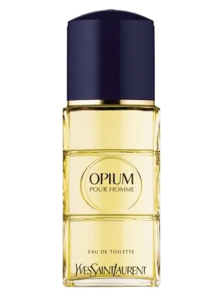

Opium pour Homme
- Para hombre
- Familia oriental
- Lanzado en 1995
$2,599
Precio de referencia. Te confirmamos el precio final y la presentación por WhatsApp antes de enviar.
Por encargo: lo conseguimos para ti
Cómo huele
Especiado suave
Atalcado
Frutal
Anís
Especiado fresco
Sus notas
Salida
grosella negraanís estrellado
Corazón
pimientagalanga
Fondo
vainilla bourbonbálsamo de tolúcedro del Atlas
Opium pour Homme de Yves Saint Laurent es un perfume oriental para hombre, lanzado en 1995. Abre con grosella negra y anís estrellado, en el corazón tiene pimienta y galanga y deja un fondo de vainilla bourbon y bálsamo de tolú. Lo que más se siente: especiado suave, atalcado y frutal.